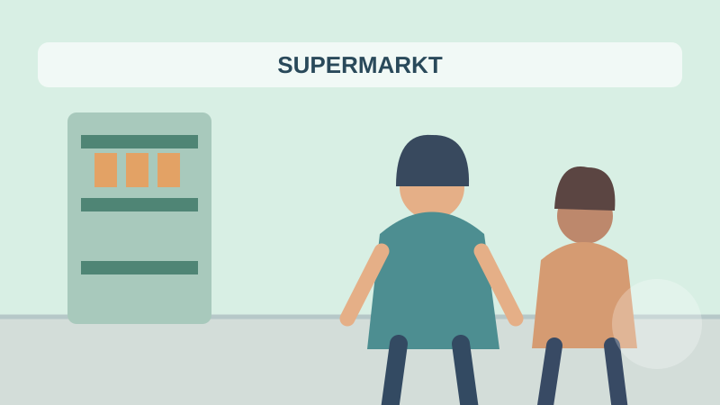

GERMAN SPEAKING STUDIO
Describe a picture.
Build your German.
Choose a scene, combine details, and practise in your language. No account. No paid AI.
A2 → B1 → B2
Scene builder
✓ Multi-select is supported in every toolbar. The picture shows a fixed practice scene; your selections customize the practice text.
Practice picture
BUNDLED ART
Illustrated scene · no network needed
German description
Practice sentences reflect your selections, not necessarily all visible image details. Check the picture before using them in an exam.
Vocabulary
DE + YOUR LANGUAGE| Deutsch | বাংলা |
|---|